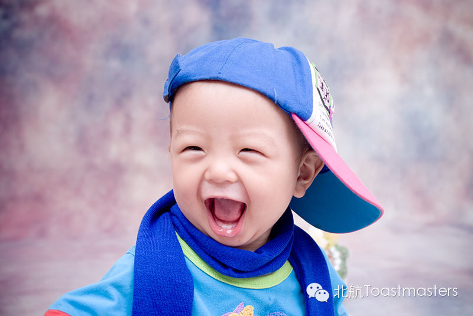
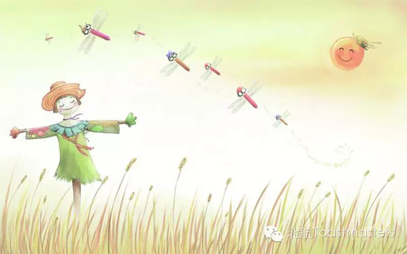

Make Me Happy
Time: 19:30-21:30, Friday, Oct. 17th
Venue: Room G221, New Main Building, Beihang University

Toastmaster: Jack
Table Topic Master: Peter
It is so nice to live in this colorful world! There are so many beautiful sceneries! There are are so many delicious food! There are so many interesting people!
There is no reason not to be happy!
Can't you see? The bright sunshine traveled billions of mile through the universe to touch you,only to make you happy!
Can't you feel? A puff of wind born on the tip of a flower petal, grew up as it ran by the tree top and bird, and at last, crashed on you, only to cheer you up!
Let's smile! Let's laugh! Let's stay happy!
Prepared Speech
Mind Your Habit
CC3 Sophie
Habits do make a difference.
The habit of taking exercise may help one keep healthy
The habit of reading may help you get a better understanding of the world.
But, what kind of kind of habit can make a girl like this?
She is an attractive little girl that makes boys' spirit get out of the body!
She is an excellent speaker from whom we can learn lots of speech skills!
She is also a cold blood mimosa killer who makes mimosa die in all kinds of ways!
I can't wait!
Prepared Speech
No Big Deal
CC6 Veronica

Some times when bad things happen, we feel as if it is the end of the world. "I can't be happy any more!" "I can never......"
But years later, when we one day look back to that thing, we feel it is not that horrible.
For some things, we thought they can be green in the memory forever, but we now need to think hard to call it up.
Some things hurt us really bad at that time, but as time goes by, we are surprised to find that it did not left even a tiny scar behind.
Are those things of great significance or not? Let's welcome Veronica to share her idea.
Map
Attention! Our meeting room changed to Room G221, New Main Building, Beihang University (北航新主楼G221房间). And you can phone to Deron for help.
TEL: 180-0125-3933

See you in the meeting!
https://mp.weixin.qq.com/s/ivKnRE33Hcs89x4CF9WDFA
本页为抢救式本地归档，图文已永久保存。